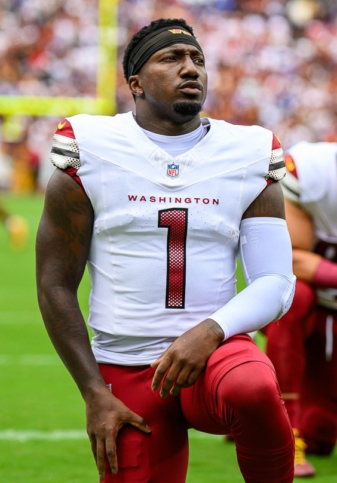
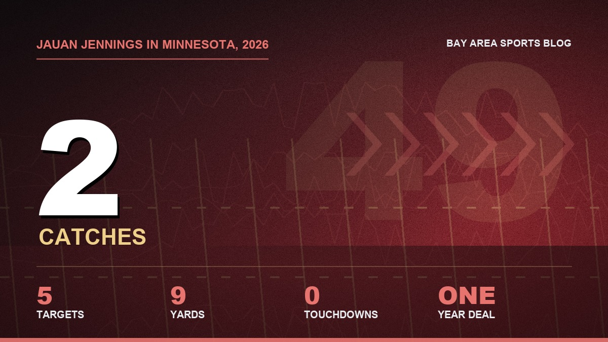
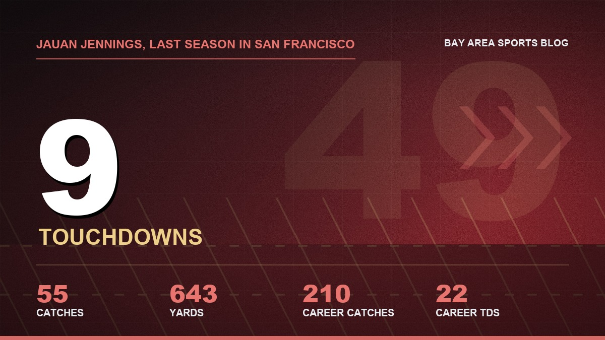
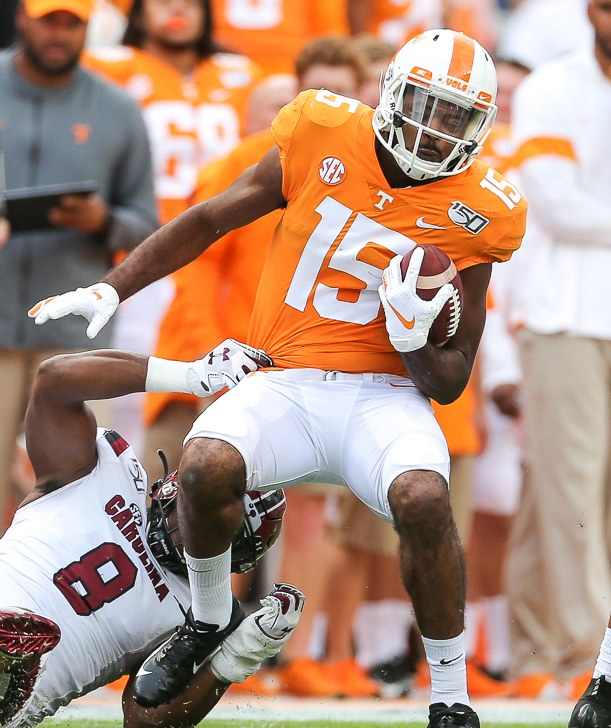

Jauan Jennings Trade Rumors: Bring Him Home, 49ers
He's got two catches in Minnesota. We've got four receivers on IR and Deebo's hamstring just went. Somebody in Santa Clara pick up the phone.

I was halfway through a burrito in the break room when my brother texted me a screenshot. No words. Just Rapoport on McAfee, saying Jauan Jennings could be a trade target for the 49ers, and that he expects Jennings' name to "heat up a little bit over the next, probably, couple days and weeks."
I texted back one word. Please.
And then I sat there with salsa on my hand thinking about how fast this whole thing flipped. Seven months ago I was mad Jauan was leaving. Tonight I'm mad he's not back yet.
The receiver room is held together with tape
You already know this if you watched Sunday, but let me say it out loud so it hurts properly.
Deebo grabbed his right hamstring in the third quarter in Seattle and never came back. Kyle came out Monday and said it "got him pretty good" and that Deebo's going to miss some time. At least a couple of games. A hamstring on a guy who plays as fast as Deebo plays doesn't heal on your schedule. It heals on its own.
That's on top of everybody else. Ricky Pearsall's on IR with the knee. De'Zhaun Stribling, our top pick, is on IR after ankle surgery. Demarcus Robinson's on IR with an ankle and can't even open his practice window until after Washington. Christian Kirk's on IR too and Kyle didn't sound like he'd see the field this week. Jacob Cowing banged up his ankle in the same game Deebo went down.
So what's left for Monday night? Mike Evans, who's been playing through busted ribs for two weeks. Brandin Cooks. Jordan Watkins. Cowing if the ankle holds. And a practice squad of Will Pauling, Xavier Smith and Malik Turner.
We're 5 and 0. We just beat the champs in their building. And our WR3 for Monday night might be a guy you've never heard of.

Meanwhile, in Minnesota
Jauan signed a one year deal with the Vikings this spring, after we'd already gone out and gotten Mike Evans. I didn't blame him. I didn't love it, but I didn't blame him. The guy asked for a new deal or a trade back in 2025, the front office said no to the trade, they patched it with some incentives, and he went out and led every receiver on the roster in touchdowns anyway. Then he walked. That's the business.
But look at what the business has done for him.

Two catches. Five targets. Nine yards. Through five weeks. And he's not hurt and he's not benched, he's out there for most of the snaps and they just aren't throwing it to him. He got caught on the sideline against New Orleans looking completely fed up, and honestly? Good. I'd be furious too.
You don't sign a guy like Jauan to be a decoy. He's not a decoy. He's the guy you throw it to on third and seven when everybody in the stadium knows where it's going and he catches it anyway with a corner hanging off his facemask.
Remember what he was here

Last year in San Francisco, Jauan caught 55 balls for 643 yards and nine touchdowns. Nine. Most of any receiver on the team. Five seasons with us, 210 catches, 2,581 yards, 22 touchdowns, and every one of them felt like he'd personally won a bar fight to get it.
And it was never really about the numbers with him. It was the attitude. A seventh round pick out of Tennessee who played quarterback for part of his college career, who blocked like a tight end, who'd jaw with Kyle on the sideline and then go catch the next one. That was the whole Jauan experience. You'd get mad at him for about thirty seconds and then he'd go do something that made you stand up off the couch.
I remember the Super Bowl in Vegas, the touchdown pass he threw to McCaffrey. I remember thinking, who IS this guy? And then I remember the overtime. I'm not going to talk about the overtime.

Why this actually makes sense
He already knows the playbook. Not the gist of it, the whole thing, every motion, every crack block, every option route Kyle's ever drawn up. He'd walk in on a Wednesday and play on Sunday like he never left. You can't say that about anybody else who's going to be available at the deadline.
He knows Purdy. Brock trusted him on third down for years. That's the thing you can't trade for, except, apparently, you can, if the guy is sitting in Minnesota doing nothing.
And the price should be nothing. He's on a one year deal. Minnesota isn't using him. I'd be stunned if this costs more than a late round pick, and if John Lynch gives up anything better than a sixth for a guy the Vikings are throwing to twice a month, I'm going to have questions.
We've already seen this movie work, too. Deebo came back on a one year deal and stepped right in like he'd been here all along. Before the hamstring he was doing exactly what we brought him back to do. Reunions with this front office have been good to us lately. Why stop now?
The stuff that worries me
I'm a 49ers fan. Worrying is the hobby.
This is a rumor. Rapoport said the 49ers "make sense," which isn't the same as the 49ers making a call. I've been burned by "makes sense" before. Everybody in this town remembers how many weeks we spent on the Aiyuk stuff, refreshing our phones, and how that whole saga ended.
And there's the Vikings. They're unbeaten too. We play them in Mexico City on November 22. Would Kevin O'Connell really hand a receiver to the team he's going to see in five weeks? Maybe, if Jauan's unhappy and they aren't throwing to him anyway. Maybe not, out of pure spite. I'd do it out of spite. That's what scares me.
Then there's the part where Jauan wanted to get paid here and didn't. He might not be dying to come back to the building that wouldn't give him the deal. I'd understand. But I also think a guy with two catches in five weeks would take a winning team, a quarterback who knows exactly where he'll be, and a real role, and he'd take it yesterday.
Just do it, John
Washington's at Levi's on Monday night. Then Atlanta on the road. Then the bye. Deebo's out for at least part of that stretch, the IR guys aren't walking through the door any time soon, and Evans can only take so many shots to the ribs.
Get him on a plane. Put him back in 15 if Kyle'll let him. Put him in the slot on third and six against Washington and let him do what he's done for us a hundred times.
I already bought the jersey once. I've still got it. It's hanging in my closet like it never left either.
More coverage: 49ers · 49ers 2026 schedule · 49ers injury report · 49ers depth chart · NFL